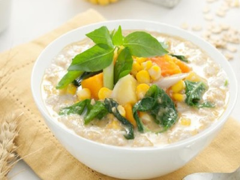

|  |
Food's name: Vegetable Oatmeal Porridge▸ Ingredients:
▸ Time to prepare: 60 minutes ▸ Approx quantity: 1 medium bowl |
▸ Detailed recipe: | |
Step 1: Soak the oats and prepare the vegetables:
- Soak oats in water for about 30 minutes.
- Carrots, red beets are peeled, washed, cut into small pieces like
pomegranate seeds.
- Cauliflower was washed and cut into small pieces.
|
Step 2: Porridge processing:
- Put oats, vegetables in a pot of water and cook for about 15 minutes until the ingredients
are soft. Season to taste.
- If you are making vegetable oatmeal porridge for your baby, you should steam the carrots,
red beets, and cauliflower and then puree them. Cook cooked oatmeal, then add the vegetable
mixture, stir well and season with spices.
|
=>After completing the above simple steps, you will have a delicious and nutritious bowl of porridge right away.
▸ Calories and related information: